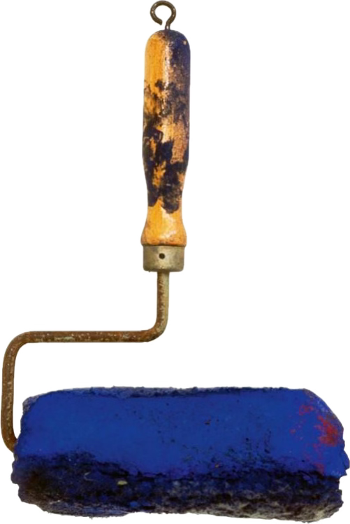

Portrait d'Yves Klein
Portrait d'Yves Klein réalisé à
l'occasion du tournage de Peter Morley
"The Heartbeat of France"
Nu d'Iris Clert sortant de l'onde
Yves Klein réalisant une Peinture de Feu
Peinture de Feu sans titre
Yves Klein's gesture evokes a man's
fantasy of controlling and mastering fire.
